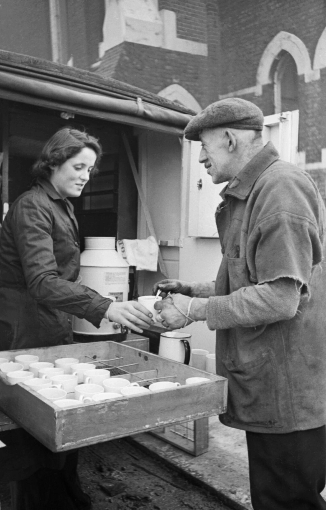

Originally being recorded in China since at least 59 BC, people have been enjoy drinking tea, no other country enjoys tea as much as Britons, however. Since the 18th century, the UK has been the world's largest consumers, drinking an average annual per capita supply of 1.9 kilograms.
Tea is easy to make, so do not be worried about how to prepare it.
If you do not have a kettle, you may substitute it with something else, such as boiling the water over a pan. A microwave may also be used, but this is usually looked down upon as it can have mixed results.
While the water is getting ready to boil, place the tea itself in a drinking device, such as a cup or mug - this is how tea is drunk in the UK. If you wish to drink it the same way as they do in China, you may use what is called a gaiwan (also called a "zhong").
Once the water is at a boil, it should be around 100°C (212°F). Turn the kettle off and you may now place the water into your drinking device.
If you wish, you may now place in as much milk as you think you will like. Remember, the more milk you use, the weaker the tea becomes!
You can also add sugar if you wish to make it sweet, either way, once you have done (or have not done) this, stir the tea with a spoon so that it all goes into the hot water and becomes mixed in.
Around two minutes or so after you have poured the hot water into the drinking device, you may remove the tea. If you have used a tea bag, you may pick it up with the spoon and also squeeze the tea itself on the side of the drinking device as a way to drain it.
After you have done this, you may now enjoy your drink, but make sure that it has cooled down enoutgh to drink. Note that in the UK, it is not custom to drink tea cold, rather hot.
Written by me, Cass Python, on 2021-03-11. The image on this page was found via Wikimedia. Text has been released into CC0. Please do not reheat your tea in the microwave.
Want to support OwlyFans? See our NFTs!
Copyright 2021 - by Cass «Owly» Python, licensed under the FOPL-ZERO.
_serves_tea_from_her_mobile_canteen_in_London_during_1941._D2159.jpg){kind=link}